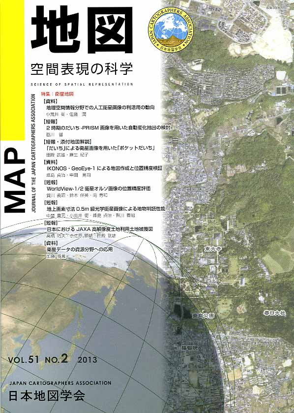
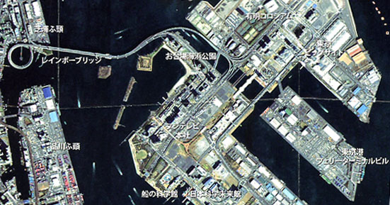
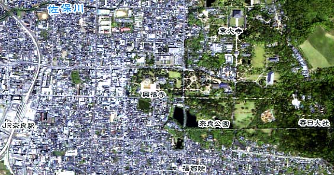

| 最 新 号 | バックナンバー | 添付地図目録 | 投 稿 規 程 |
Vol.51 No.２ （通巻２０２号） ２０１３年 《特集：衛星地図》
| 【紙碑】 | 名誉会員 金澤敬さんの逝去を悼む | 金窪敏知 |
| 【資料】 | 地理空間情報分野での人工衛星画像の利活用の動向 | 小荒井衛・佐藤 潤 |
| キーワード：衛星地図、高分解能人工衛星画像、ALOS、地形図、主題図 | ||
| 【短報】 | 2時期のだいち−PRISM画像を用いた自動変化抽出の検討 | 笹川 啓 |
| キーワード：だいち、ALOS PRISM、自動変化抽出 | ||
| 【短報・添付地図解説】 | 「だいち」による衛星画像を用いた「ポケットだいち」 | 田殿武雄・麻生紀子 |
| キーワード：ALOS、PRISM、数値標高モデル、衛星地形図 | ||
| 【資料】 | IKONOS・GeoEye-1による地図作成と位置精度検証 | 峰島貞治・中田晃司 |
| キーワード：高分解能衛星画像、IKONOS、GeoEye-1 | ||
| 【短報】 | WorldView-1/2衛星オルソ画像の位置精度評価 | 賀川義昭・鈴木伴英・南 秀和 |
| キーワード：高分解能衛星画像、オルソ画像、位置精度 | ||
| 【短報】 | 地上画素寸法0.5ｍ級光学衛星画像による地物判読性能 | 中埜貴元・小荒井衛・峰島貞治・賀川義昭 |
| キーワード：地上画素寸法0.5m、地物判読性能、GeoEye-1、WorldView-2、つくば市 | ||
| 【短報】 | 日本におけるJAXA高解像度土地利用土地被覆図 | 高橋陪夫・奈佐原顕郎・田殿武雄 |
| キーワード：土地被覆分類、ALOS、AVNIR-2、PRISM、PALSAR、NDVI、植生季節学 | ||
| 【資料】 | 衛星データの資源分野への応用 | 加藤雅胤 |
| キーワード：ASTER、PALSAR、HISUI、地形図、資源探査 | ||
| 【リレーメッセージ：地図・地図学への思い】 | 「だいち」のさきがけ | 三浦公亮 |
| 【特別会員名簿】 | ||
| 【学会記事】 | ||
| 【お知らせ】 | 第50巻4号に掲載された図版へのご意見と対応について | 日本地図学会 編集委員会 |
| 【添付地図】 |
ポケットだいち 【「だいち」からみた東京ベイエリアと周辺地域】 か 【「宇宙」からみた奈良と周辺地域】 のいずれかが添付されています。 |
|
|
≪No.51 No.2 表紙≫ |
|
|  |
|
|
|
≪No.51 No.2 添付地図≫ |
|
 「だいち」からみた東京ベイエリアと周辺地域  「宇宙」からみた奈良と周辺地域 ＊上記２図のいずれかが添付されています＊ 本図を許可なく複製・利用することを禁止します。
|